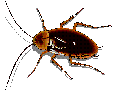
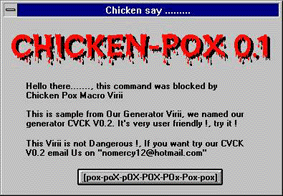

En septembre 1995, le numéro 5 de Sécurité informatique était déjà un "spécial virus". Est-il nécessaire de revenir trente mois plus tard sur cette menace que certains, faute d'avoir goûté aux désagréments de la contamination et du traitement thérapeutique, considèrent encore avec le plus grand détachement.
Leur détachement me rappelle celui de ce poilu de la guerre de 14, rescapé du Chemin des Dames et de Verdun, qui affirmait que la grippe durait huit jours si l'on se soignait et une semaine si l'on ne se soignait pas Quelques mois après la victoire, la grippe espagnole l'avait expédié, sans tambours ni trompettes, vers un monde meilleur. C'est pour vous épargner le déplaisir de voir le contenu de vos disques durs s'en aller ad patres que nous avons décidé de faire une piqûre de rappel.
Au cours de ces trente mois, beaucoup de choses ont changé dans le monde de la pathologie informatique. Les virus d'antan, brillants produits intellectuels conçus par des informaticiens aussi savants que pervers, sont maintenant détrônés par des macro-virus, encore plus sournois, que tout un chacun peut désormais composer à sa guise comme Monsieur Jourdain faisait de la prose.
La contamination, il y a trois ans, se faisait surtout par l'échange de disquettes programmes ou par le téléchargement de logiciels. Actuellement, les vecteurs les plus dangereux sont les pièces jointes du courrier électronique (ou "mél" pour ceux que l'inélégance de ce néologisme ne rebute pas).
Alors, munissez-vous de la plus récente version d'un bon anti-virus, actualisez votre fichier de signatures au moins une fois par mois et n'hésitez pas à leur soumettre tous les "attachments" des "méls" qui vous sont adressés.
A.....A......Atchoum.Tiens, tiens ! Aurais-je attrapé quelque infection ?
Philippe Schreiber
Fonctionnaire de Défense
| DERNIERE MINUTE : Une cassette vidéo de présentation des macro-virus (30 mn) est disponible. Demandez-la à votre Correspondant Sécurité Régional (cf. http://www.cnrs.fr/Infosecu/correg.html) ou, quand il existe, à celui de votre laboratoire. |

 macro-virus |
Jusqu'à la fin de 1995, tous ceux qui, peu ou prou, s'y connaissaient en virus informatiques s'accordaient à dire que, hormis sur les exécutables (programmes en binaires) et les secteurs d'amorce des médias (boot et/ou MBR), nul virus ne pouvait assurer par lui-même sa dissémination.
Joe McNamara, en décembre 1995, apporta un démenti formel. Avec le virus "Concept.a" était née une nouvelle variété : les macro-virus.
"That's enough to proove my point"
affichait humoristiquement le premier macro-virus à son activation. C'était en effet tout dire quant à la possibilité de produire du code reproducteur à l'aide du langage macro utilisé par Word.
"Mécaniquement" inoffensif, Concept.a ne faisait que se reproduire. Mais il le faisait bel et bien, montrant par là qu'il était possible d'écrire du code (ASCII) reproductible, ce qui est, sémantiquement parlant, la définition du virus (l'aspect destructeur -"payload" en américain - n'est qu'une fonctionnalité redoutée mais pas présente dans chaque virus). La preuve était faite qu'il était possible de contaminer des machines en utilisant comme médiateur certains logiciels bureautiques possédant un macro-langage : "Word Basic" pour Word 6 et ultérieur, Visual Basic pour WinWord97 et Excel.
Comme il fallait s'y attendre, Excel fut lui-même très rapidement touché par la vague macro virus... Une nouvelle espèce de virus était née, capable d'utiliser les données de certains logiciels comme vecteur d'infection et non plus seulement les programmes ou les blocs boot des fichiers. Fait nouveau encore, cette espèce est indépendante des systèmes d'exploitation : Mac et Pc peuvent se contaminer mutuellement, ce qui n'était pas vrai auparavant.
De surcroît, ces virus se propagent beaucoup plus vite que les autres parce que les utilisateurs s'échangent de plus en plus de documents, facilités en cela par la croissance extraordinaire des échanges par les réseaux.
Aujourd'hui, les virus macros, s'ils ne représentent qu'une part mineure du vivier viral recensé (15 000), sont tout de même responsables de 95, voire 100 % de la sinistralité virus française (statistiques RECIF). Numériquement parlant, la dernière liste officielle (ftp://agn-www.informatik.uni-hamburg.de/pub/texts/macro) révèle les effectifs suivants pour les Pc :
|
|
|
| ||||
Nombre de signatures |
297 |
20 |
317 ( 11) | ||||
Nombre de générateurs* |
11 |
0 |
11 ( 0) | ||||
Nombre de virus |
1738 |
88 |
1826 (127) | ||||
Chevaux de Troie** |
31 |
7 |
38 ( 0) | ||||
Canular macro |
1 |
1 |
2 (0) | ||||
Virus avortés |
31 |
4 |
35 (1) |
*Générateurs : outils de création logiciel permettant de fabriquer "sur mesure" des virus correspondant au cahier des charges retenu par l'utilisateur.
**Chevaux de Troie : utilisation d'une commande ou d'un programme usuel pour masquer une action malveillante. Exemple : une soi-disant beta-version d'antivirus et/ou un doubleur de disque en shareware
Comme il fallait s'y attendre, l'"école" des générateurs de virus nés de la vague des virus-programmes et virus-système (de boot) s'est tout naturellement portée également vers les virus macros avec une production recensée de quelque 11 générateurs. Une étude détaillée révélera que les virus issus de ces générateurs sont de l'ordre de 1738 (décembre 97). La même remarque que celle faite à l'époque de la sortie des générateurs de virus-programmes s'applique aujourd'hui. Si les générateurs se multiplient et possèdent potentiellement la faculté de produire de véritables myriades de virus, force est de constater que peu d'entre eux franchissent la barrière du "laboratoire" pour se répandre effectivement et être recensés sur les sites. Nul ne s'en plaindra
Si, historiquement, le premier macro-virus est donc un virus dédié Word, nous avons vu qu'Excel était également une application à risque. La liste ne s'arrête toutefois pas là : il faut encore ajouter Lotus AmiPRO (devenuWordPRO). Potentiellement, tous les logiciels possédant un macro langage peuvent héberger des macro-virus spécifiques à ces logiciels : ils sont de plus en plus nombreux. Les versions de Word, sur Macintosh, inférieur à 6.0 n'ont pas de macro-langage et ne peuvent ni contaminer ni être contaminées par un document. Tout fichier en Word6 traduit en Word5 est débarrassé de ses macros, et donc de macro-virus éventuels.
Il faut mentionner encore, deux chevaux de Troie ( programmes destructeurs sans faculté de reproduction ) sous microsoft Write et un fichier WinHelp.
Sans vouloir rentrer dans des considérations trop techniques, le principe général de fonctionnement est simple et se déroule en trois temps :
A l'ouverture d'un document Word (.doc) contaminé, la macro AutoOpen est tout naturellement exécutée et va procéder à l'infection du fichier contenant les macros (Normal.dot). Au prochain lancement de Word, le fichier des macros infecté est lu dès le démarrage. Les instructions qu'il contient, macro-virus compris, sont exécutées, propageant ainsi l'infection à tout document Word, que celui-ci soit créé, modifié ou "Sauvegardé sous".
Entre autres désagréments causés par un macro-virus, on notera chez certains l'impossibilité d'utiliser certaines fonctions comme "Sauvegarder sous". D'autres fonctionnalités peuvent ainsi n'apparaître qu'en grisé dans les menus Winword, donc être inopérantes.
Comme pour n'importe quel autre virus, l'imagination des auteurs est des plus fertiles. Nous pouvons citer, entre autres, l'incrustation de lignes de texte parasites dans les impressions papier, la création d'un fichier exécutable binaire (mais oui) infecté, l'effacement de pistes et secteurs.
Revenons sur la faculté de créer des fichiers binaires. Je me garderai bien dans ces lignes d'indiquer le mode opératoire complet, mais les plus avertis des lecteurs comprendront qu'il est aisé de chercher Debug.exe sur un disque, de la lancer avec un script en "pipe". Ce script, on l'aura compris, n'est autre que la transcription du fichier infecté en code hexadécimal Que l'exécution dudit script se termine par un "-w" (sauvegarde sous forme de fichier) ou un "-g" (exécute directement), la nuance est mineure en terme de sinistralité. En effet, même simplement placé sur le disque, l'auteur du virus aura pris soin que ce fichier nouvellement créé soit exécuté le plus tôt possible (quid de C:\Command.com, par exemple, ou Win.com ?).
Dès lors, toute stratégie exclusivement axée sur une protection macro-virus doit être absolument hermétique, car la moindre faille permettra l'installation de binaires infectés et, partant, leur exécution dans un laps de temps très restreint.

Les virus macros représentent une menace évidente quand on y regarde d'un peu plus près. Bien qu'il faille toujours rester très prudent envers les " sharewares " récupérés soit sur des cédéroms " gratuits ", soit provenant d'internet, il devient plus rare de recevoir des exécutables contaminés. On ne s'échange plus guère des disquettes de logiciels comme au temps de " la belle époque ". Le danger principal vient des documents, danger d'autant plus grand que ces échanges progressent d'une manière explosive ! En effet, le sens de l'histoire allant vers la multiplication des réseaux (quel qu'en soit le type), le simple transfert de fichiers sur disquette d'hier devient le "fichier joint" d'aujourd'hui. La facilité aidant, les articles, les documents administratifs, les documentations diverses, les informations, - très souvent sous la forme de document Word ou de feuille de calcul Excel - montent en vagues déferlantes, sur lesquelles surfent de plus en plus nombreux, les virus macros qui viennent s'échouer dans vos boîtes à lettres électroniques. Le comble est atteint quand celui qui reçoit le fichier n'en est pas le destinataire final. Le message contaminant peut ainsi rebondir de nombreuses fois. Il y a fort à parier que dans peu de temps, les tribunaux seront saisis d'affaires relevant de ce contexte.
Si, naguère, il était facile de dédier une machine au contrôle anti-virus des fichiers entrants, cette stratégie est désormais du domaine du rêve. La protection doit alors se situer soit en amont de l'utilisateur (garde-barrières, protection des flux entrant/sortant TCP/IP), soit directement sur le poste de travail.
Notre préférence va à la dernière de ces solutions. En effet, la seule protection des flux TCP/IP en amont du site peut séduire, mais si on la choisit comme solution unique, celle-ci devra être parfaitement étanche. Aucune ne l'est et ne le sera jamais, persuadons-nous en.
À l'inverse, une protection individualisée sur le poste de l'utilisateur le protégera tant au niveau des risques liés à internet que pour le reste : copie de fichiers de/vers disquettes, dépôt d'une machine chez un réparateur, installation d'applications provenant d'éditeur peu soigneux (voir encadré).
La mise en uvre d'anti-virus classiques reste donc la solution à privilégier. En effet, le scanner en ligne (que l'on lance à chaque fois qu'on en a besoin) permet la meilleure finesse de diagnostic. En outre, l'emploi de VxD (Virtual Access Driver ou scanner résident) donne le droit à l'erreur, chaque fichier ouvert pour quelque raison que ce soit étant analysé par le VxD. Certes, ce dernier n'a pas la même qualité que son aîné pour analyser les fichiers archivés (.ZIP et consorts), mais, une fois désarchivés pour utilisation, nous nous retrouvons dans le cas de figure habituel que le VxD, cette fois-ci, saura analyser.
Nous avons donc là une détection en deux temps avec une phase intermédiaire correspondant à l'état d'archive où, de toute façon, un virus ne peut s'exécuter. Avec l'anti-virus décliné sous ses deux formes, nous sommes à même de parvenir à une relative maîtrise des virus.
Curieusement, il est simple, grâce à quelques précautions, de ne risquer aucune contamination par un virus macro. La précaution la plus facile à mettre en oeuvre est l'utisation de "Scanprot", freeware distribué par Microsoft (cf référence) qui s'intègre directement à Word et qui permet de désactiver les macros ou d'être prévenu de leur existence dans un document. On peut aussi :
Sous Macintosh : utiliser Word 5.1 avec un convertisseur de format Word5 - Word6. Vous avez ainsi en prime une version de Word plus stable
Sous Windows, utiliser un petit utilitaire interprétant les fichiers Word, comme Wordpad. L'opération, pour rébarbative qu'elle puisse paraître, deviendra vite une habitude :
Sous réserve que l'environnement Normal.dot soit lui-même sain (voir ci-après), notre document est désormais dans le plan de travail de Winword et dépourvu de toute macro. En effet, Wordpad est incapable de lire les macros. Une recopie in extenso du contenu textuel des fichiers .doc est donc très simple et exempte de risques. Celle-ci réalisée, il ne vous reste plus qu'à sauvegarder le nouveau document ainsi obtenu.
Cette méthode a cependant deux inconvénients :
Sous Excel, il vous suffira, de la même manière,
d'utiliser comme "tampon" un utilitaire "interpréteur"
de .XLS. L'astuce du copier-coller reste identique à ce que
nous avons évoqué pour Winword. Toutefois la perte des macros
légitimes, plus fréquentes sous Excel, se pose avec une plus
grande acuité.
On s'aperçoit que c'est la recherche effrénée du tout-automatique qui cause la sinistralité dont nous avons ci-dessus souligné l'importance. Quelques règles de bons sens suffisent presque à juguler toute infection par virus macro. Certes, ce tableau idyllique est démoli par l'étourderie à laquelle nous sommes tous sujets : qui ne double-cliquera pas sur un .Doc malgré la connaissance de ce qui précède ?
Gérard Mannig
Éditions Gérard Mannig, Distributeur d'AVP
avpcontact@worldnet.fr
http://www.avp-france.com
|

 |
... Les brèves ... |
Rappel : la liste sos-virus@services.cnrs.fr a pour objet :
Pour vous abonner, consulter la page http://www.services.cnrs.fr/Listes/ |

Des dates et les chiffres |
(Source " Pour la science " janvier 1998) |

Le jeudi noir d'internet |
De la Une du New York Times à la télévision aux heures de grande écoute, tous les médias ont retenu la date du 3 novembre 1988 : l'arrivée d'un ver qui a paralysé pendant plusieurs jours la quasi-totalité des centres de calcul universitaires et de recherche des États-Unis. Des milliers de machines Unix étaient touchées. Les opérateurs relevaient des temps de réponse fortement dégradés, leurs machines étaient surchargées par l'exécution simultanée d'une multitude de tâches qui renaissaient spontanément en dépit des efforts visant à les éliminer. Arrêter, rebooter, recharger le système, rien n'y faisait. Sitôt l'attaque détectée, les meilleurs chercheurs d'outre-Atlantique se sont attelés à la parer. Il leur a fallu deux jours pour démonter le mécanisme du ver (worm en américain) qui s'était propagé et se maintenait grâce à l'internet. Ironie de l'histoire, le père de Robert T. Morris, l'étudiant responsable de cette grande panique des centres de calcul, est un expert réputé de la sécurité informatique aux États-Unis. |

Les macro-virus classés en tête ! |
Cinq macro-virus occupent les premières places dans le palmarès des virus. Par ordre de fréquence de contamination, nous trouvons :
Si la plupart des macro-virus ne sont pas destructifs de données ou de systèmes comme le sont les virus classiques, ils bloquent néanmoins le fonctionnement normal de Word ou d'Excel. Par exemple, ils peuvent empêcher l'enregistrement d'un document, interdire son impression, afficher des messages inquiétants, insérer des textes parasites, etc. Nuclear est, jusqu'à présent, le seul macro-virus connu qui cause des dégâts dans les sorties imprimées et le système de fichiers DOS. (Tiré de Virus Bulletin, septembre 1997) |

Modifier les macros manuellement ? |
Et si vous tentiez tout simplement de modifier, voire de supprimer vous-même manuellement, les macros suspectes ? Cela ne marchera pas dans tous les cas de figure, certains virus macros ayant pris le soin de désactiver l'accès au menu "Outils/macros". À moins de savoir travailler directement sous éditeur hexadécimal, cela relève de la fantaisie et risque d'endommager à tout jamais vos données. |

Précautions standard gratuites |
Une analyse technique des virus macros (disponible sur http://www.avp.ch/avpve) révèle que Format.com, Debug.exe, voire Sys.com sont recherchés et activés par certains d'entre eux. Il nous paraît, au jour d'aujourd'hui, des plus périlleux de laisser séjourner sur les disques Debug.exe et Sys.exe. Le premier n'étant jamais utilisé dans le cadre bureautique, même évolué, et le second étant devenu inutile, les disques parvenant à l'utilisateur pré-configurés. Quant à Format.com, son utilisation reste désormais relativement épisodique, l'usage des disquettes tendant à disparaître de plus en plus, surtout dans un contexte réseau marqué. Nous pouvons également étendre cette mesure salutaire à Fdisk.exe lequel, ne l'oublions pas, peut tout simplement supprimer une partition. Si le maintien de tout ou partie de ces programmes doit être assuré, il est alors sage de les renommer, mettant ainsi en échec toute tentative de récupération par un virus macro tout en en laissant la disponibilité déguisée à l'utilisateur. |

Patrick Jakubowicz de l'unité "Modélisation stochastique et statistique" de l'Université Paris-Sud nous rappelle quelques idées simples :
Rappelons que les macros globales se trouvent dans le fichier Normal.dot. Au lancement, Word vérifie que ce fichier existe. S'il ne le trouve pas, il le recrée automatiquement dans sa version standard : inutile donc de le sauvegarder. En revanche, si on utilise le macro langage, il est judicieux de le sauvegarder pour pouvoir éventuellement le restaurer en cas de doute. Rappelons aussi que le format RTF suffit pour des textes sans macros, ne contenant pas de tableaux, d'inclusions d'images ni d'objets |

Même les éditeurs de logiciels peuvent se laisser prendre |
En octobre 97, un éditeur de logiciel célèbre a diffusé des cédéroms qui contenaient un virus macro ! C'est ce que révèle : http://www.microsoft.com/france/education/colleges/cdinternet.htm. Cet incident n'a rien de rarissime et la fréquentation de Usenet a déjà dû le prouver à certains d'entre vous. "À qui se fier ?" est à l'évidence une question qu'il faut se poser avant d'arrêter une politique de protection. La mise en oeuvre d'anti-virus analysant médias locaux et réseaux reste la solution. |

MKILLER |
http://www.avp-france.com/freeware.htm
Détecteur/Eradicateur générique de macros suspectes (freeware), compatible Office95, Mkiller liste les macros contenues dans les cibles désignées et propose à l'utilisateur (éventuellement inconditionnellement à l'aide d'un switch) l'effacement pur et simple desdites macros suspectes. Par souci de sécurité, le titre des macros incriminées est affiché avec un 'S' pour marquer les macros suspectes.
Lancé depuis l'Autoexec, il permet l'analyse complète des ressources utilisateurs et un nettoyage complet mais prive du même coup d'anti-virus et de la possibilité de pouvoir étudier les échantillons de virus éventuellement nouveaux. Soyons tous solidaires

Remontée d'échantillons |
Il est possible de faire remonter des échantillons de documents que vous jugez suspects à avpcontact@worldnet.fr. Veillez à vider vos .doc et .xls de leurs textes et données. Pour ce faire (que ce soit sous Word ou sous Excel), il vous suffit, une fois le fichier ouvert dans votre application, de sélectionner l'intégralité du document et de faire "Edition/Couper" ou d'appuyer tout simplement sur la touche "Suppr". Après, il vous suffit de sauvegarder le document sous un autre nom en prenant celui de votre site CNRS ou de votre URA.